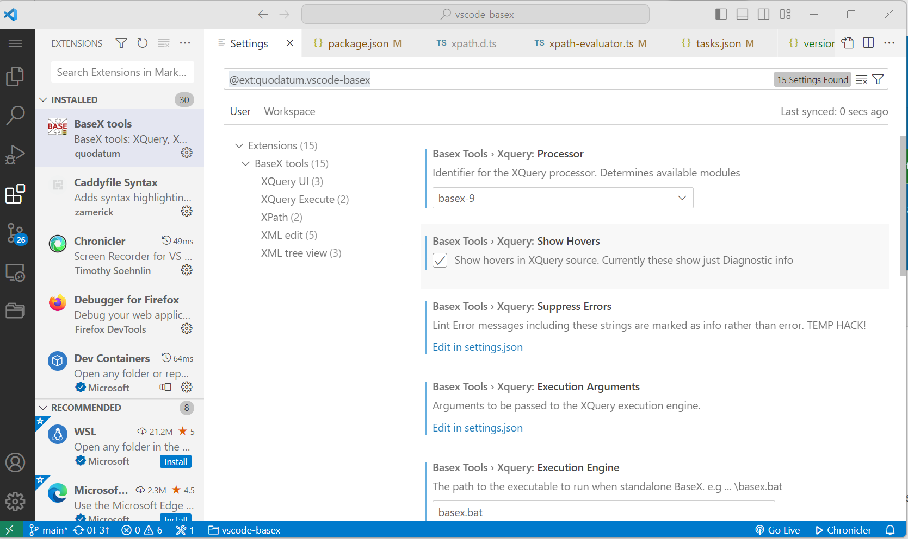

Settings (15)
Settings can be viewed and set from the extensions view. 
XQuery
processor
The XQuery processor. Determines syntax and core module libraries.
default: basex-9
showHovers
Show hovers in XQuery source. Currently these show just Diagnostic info.
default: false
suppressErrors
Lint Error messages including these strings are marked as info rather than error. TEMP HACK! [XQST0059],[XPST0008]
executionArguments
Arguments to be passed to the XQuery execution engine.
executionEngine
The path to the executable to run when standalone BaseX. e.g ... \basex.bat
XPath
ignoreDefaultNamespace
Ignore default xmlns attributes when evaluating XPath.
default: true
persistXPathQuery
Remember the last XPath query used.
default: true
XML
enforcePrettySelfClosingTagOnFormat
Enforces a space before the forward slash at the end of a self-closing XML tag.
default: false
removeCommentsOnMinify
Remove XML comments during minification.
default: false
splitAttributesOnFormat
Put each attribute on a new line when formatting Overrides splitXmlnsOnFormat if set to true.
default: false
splitXmlnsOnFormat
Put each xmlns attribute on a new line when formatting XML.
default: true
FormatterImplementation
Supported XML Formatters:
* classic
* v2
XML Treeview
enableTreeView
Enables the XML Document view in the explorer for XML documents.
default: false
enableViewMetadata
Enables attribute and child element counts in the XML Document view.
default: true
enableViewCursorSync
Enables auto-reveal of elements in the XML Document view when a start tag is clicked in the editor.
default: false